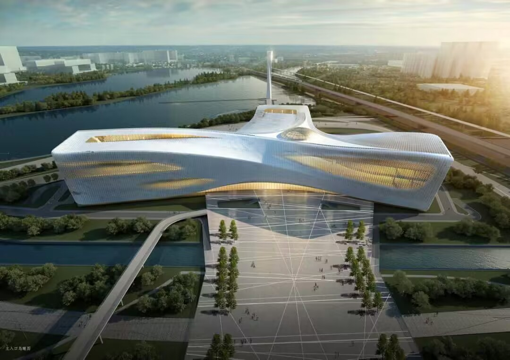

首页
历史文化
景区
5A级景区
4A级景区
文博科教
线路
四大古都焕新之旅
老家河南寻根之旅
华夏文明探源之旅
中原民俗风情之旅
美食
地道小吃
开胃佳肴
绝味面食
可口鲜汤
旅游资讯
联系我们
注册
登录
文博科教
开封博物馆位于中国河南省开封市鼓楼区，是一座以宋代文化为主题的博物馆。馆内收藏了大量的历史文物和艺术品，包括陶瓷、书画、铜器、玉器、石刻等，展示了宋代文化的繁荣和发展。开封博物馆的建筑风格典雅古朴，是中国传统建筑的代表之一。馆内分为七个展厅，分别展示了不同主题的文物和艺术品，其中最为著名的展品是清明上河图的复制品，这幅画是宋代画家张择端所作，描绘了当时汴京城内外繁华景象。是中国绘画史上的经典之作。此外，开封博物馆还收藏了许多其他珍贵的文物和艺术品，如宋代瓷器、宋代书画、宋代铜器、宋代玉器等。除了展品外，开封博物馆还有许多其他的特色活动和展览。
开封博物馆
洛阳古代艺术博物馆原名洛阳古墓博物馆，占地面积130余亩，建筑面积8200余平方米，由一组仿汉代建筑群和一组仿北魏建筑群组成，主体部分为北魏世宗宣武帝景陵，整个地面建筑之间，广植花草树木，设有假山水池，堪称公园式博物馆，1987年建成开放。 自古有“北邙山头少闲土，尽是洛阳人旧墓”之说的洛阳北邙山及周边地区，历代古墓葬星罗棋布，在此基础上应运而生的专题性博物馆——洛阳古墓博物馆，其面积之大、风格之别致、收集古墓年代之久、类型及数量之多均属世界首位，是中国一大绝观。因此，洛阳古代艺术博物馆又是中国最大的古墓博物馆之一，同时也成为世界上第一座古墓博物馆。
洛阳古代艺术博物馆
郑州博物馆是一座极具华夏文明特色的综合性城市博物馆，为首批“国家一级博物馆”。其位于中国河南省郑州市中原区，是一座现代化的建筑。馆藏丰富。博物馆现有文物藏品近6万余件，包括陶器、瓷器、青铜器、石刻、书画等20多个门类，尤以新石器时代陶器、商周青铜器、唐宋石雕、历代瓷器等最具地方特色1 2。展览多样。博物馆基本陈列以《古都郑州》为主题，展览以郑州辉煌灿烂的夏、商、周三代青铜文明为主线，分为“山河颂-文明沃土”、“郑韩风-故都春秋”三部分3。设施完善。博物馆设有教育活动区域和多功能厅，在教育活动区域，博物馆组织了各种形式的教育活动，如讲座、讲解和研讨会，为广大观众提供了更多的学习机会
郑州博物馆

河南省科技馆位于郑州市郑东新区，建筑面积13.04万平方米，是河南省有史以来规模最大、投资最多的公益性投资项目。河南省科技馆以“智慧·创新·梦想”为主题，设8个常设展厅。目前已建成“动物家园”“童梦乐园”“创享空间”“探索发现”“宇宙天文”5个常设展厅、“生活在火星”专题展览、“党领导下的科学家主题展”2个短期展厅以及球幕影院、巨幕影院等，全面建成后将成为集科普展览、特效影视、教育培训、展品研发、资源集成等为一体的综合性科普教育基地。
河南省科技馆